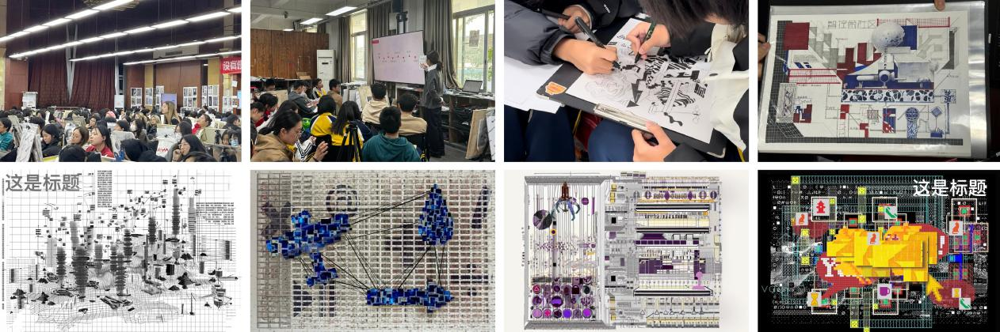
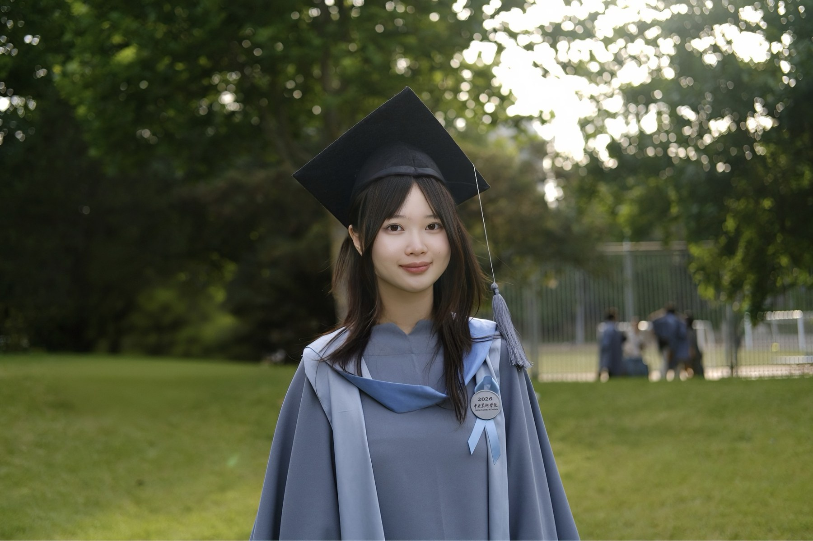
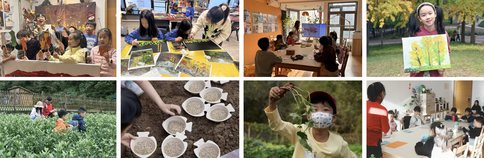
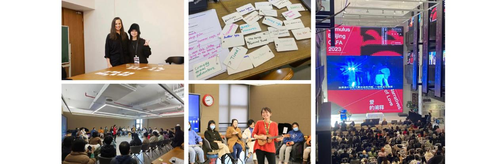
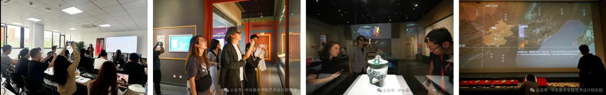
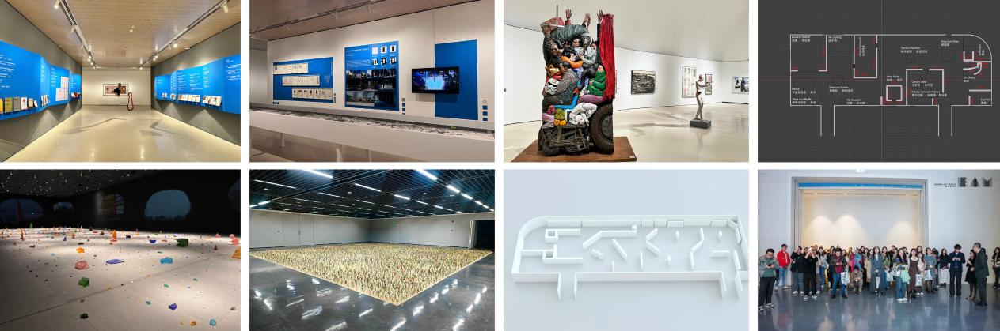
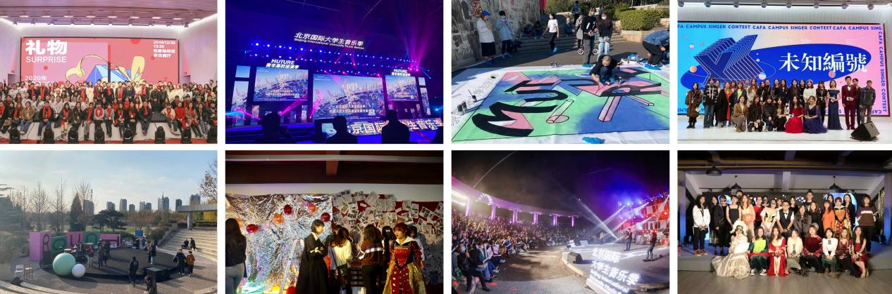

Design Teacher
Beijing Success Trajectory Education Technology Co., Ltd.

About
I am a researcher and educator working across art education, environmental education, and human–nature relationships. I explore how creative and embodied learning can reshape the ways people perceive and relate to the natural world.
With a background in art and design, I bring together research, curriculum design, and teaching practice. My work spans plant-centered workshops, community-based cultural heritage education, and experiments in visual and interactive media.
I completed my master’s degree in Art Education at the Central Academy of Fine Arts in 2026, following a bachelor’s degree in Art and Design in 2023.
Get in touch
Design Teacher

Design Teacher

Workshop Assistant

Course Assistant · China National Arts Fund Project

Curatorial Assistant

Vice Chair · Arts and Culture Department
